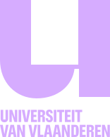
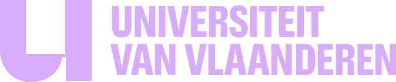
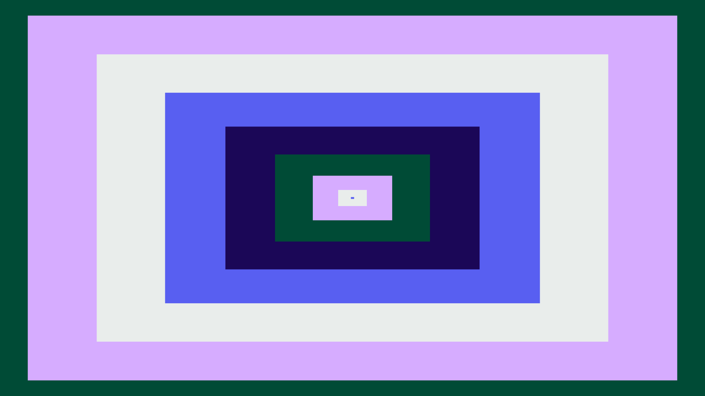
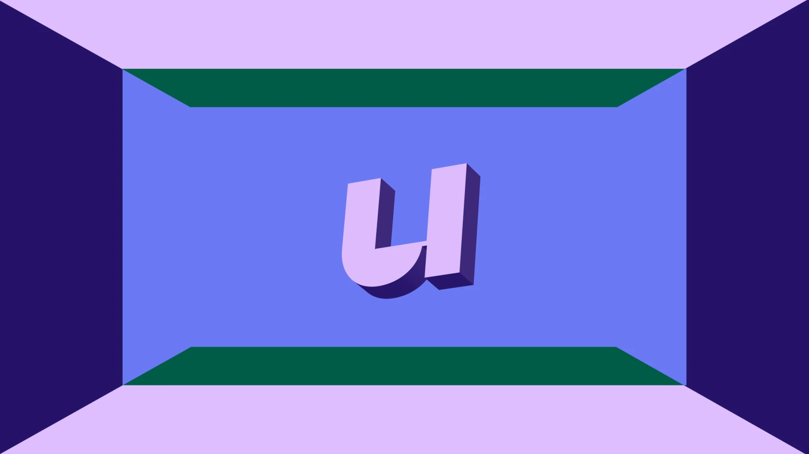
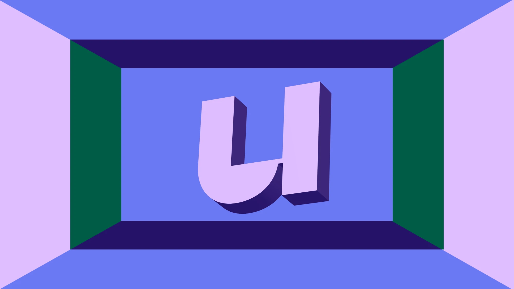
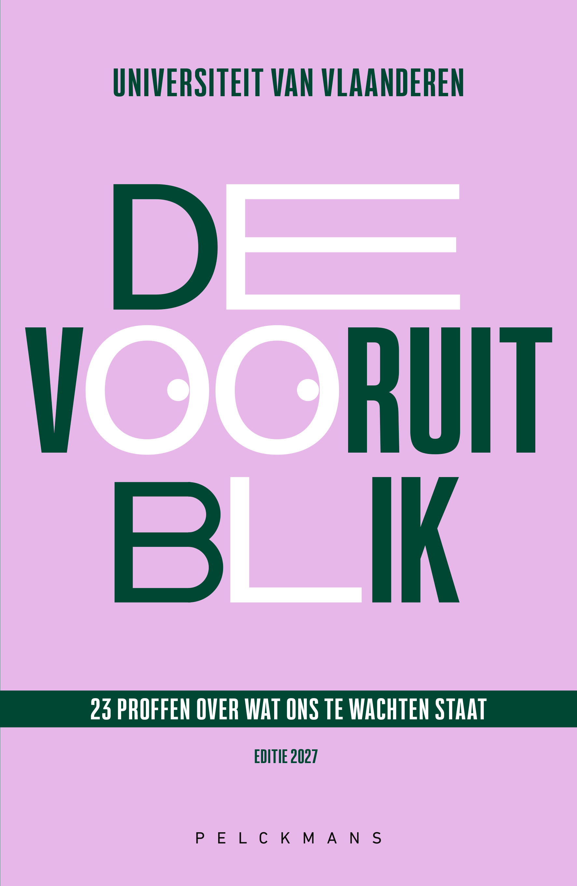
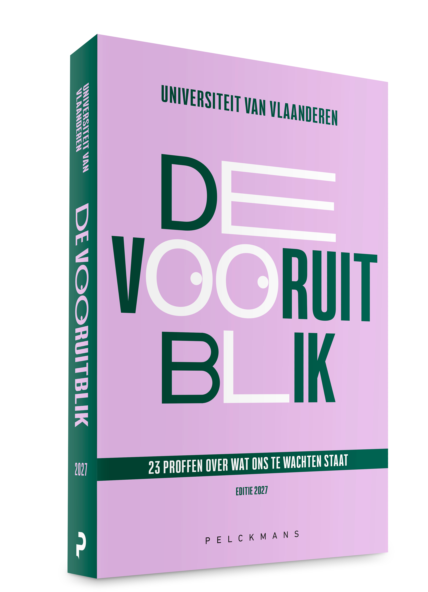

Vormgeving
Alles om De Vooruitblik herkenbaar te gebruiken: logo, beeld, kleuren en lettertypes, plus het materiaal om te delen. Klik op een beeld of knop om te downloaden.

De logo’s
Het logo van De Vooruitblik en dat van Universiteit van Vlaanderen, de afzender. Altijd naast elkaar op dezelfde hoogte: op licht groen, op donker Electric Purple.

Gebruik het logo van De Vooruitblik in Electric Purple op een donkere ondergrond: Varsity Green, Ballpoint of Electric Blue.
Beeld
Vlakken en een U in perspectief, als achtergrond of tussenbeeld.

Concentrische vlakken
Ineenschuivende rechthoeken in de huisstijlkleuren.
Download ↓
U in de tunnel, versie 1
De U in 3D in het midden van een kamer van kleurvlakken.
Download ↓
U in de tunnel, versie 2
Dezelfde U, dichterbij en met andere vlakken.
Download ↓Het boek
De cover van De Vooruitblik 2027, uitgegeven door Pelckmans.

Voorkant
Platte voorkant van het boek.
Download ↓
Voor- en zijkant (3D)
Het boek in perspectief.
Download ↓E-mailhandtekening
Drie banners om onder je e-mails te zetten.


Materiaal om te delen
Portretten, video’s, posts en advertenties volgen. Zodra ze klaar zijn, staan ze hier.
Foto’s
Portretten van de professoren, geordend per hoofdstuk. Vrij te gebruiken, bijvoorbeeld voor een affiche.
Komt binnenkort
Video’s
Drie video’s per professor: het boek promoten, de inhoudsopgave voorlezen en doorverwijzen, en zichzelf voorstellen met één prikkelende zin.
Komt binnenkort
Sociale media
De kant-en-klare posts om te delen.
Komt binnenkort
Advertenties Mediahuis
De advertenties bij het boek.
Komt binnenkort
Kleuren
Klik op een kleur om de code te kopiëren.
Kies per uiting één verzadigde accentkleur. Rood of geel combineer je met paars in plaats van met groen.
Lettertypes
Drie lettertypes, elk met een eigen rol.
Oldschool Grotesk Condensed
ZWAAR VERSAAL, STRAK
Oldschool Grotesk
Eén vraag per hoofdstuk, beantwoord door een professor.
Tiempos Text Italic
Alleen voor korte regels en citaten.
De lettertypes zijn gelicentieerd en hier niet te downloaden.